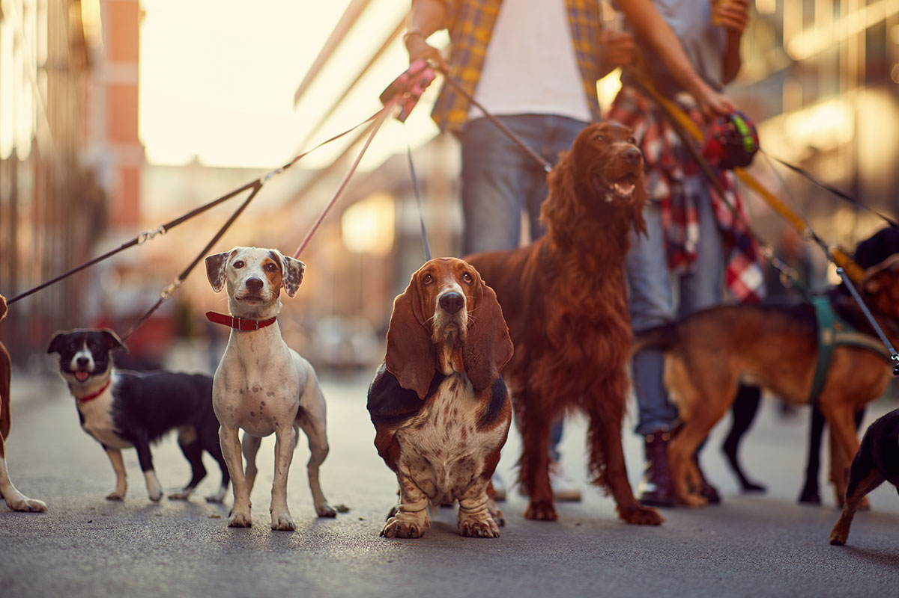

<nav class="navbar navbar-expand-md navbar-dark fixed-top" style="background-color: rgb(102, 209, 102);">
  <div class="logo"></div>
  <button  class="navbar-toggler" type="button" data-toggle="collapse" data-target="#navbarCollapse" aria-controls="navbarCollapse" aria-expanded="false" aria-label="Toggle navigation">
    <span class="navbar-toggler-icon"></span>
  </button>
  <div class="collapse navbar-collapse" id="navbarCollapse">
    <ul class="navbar-nav mr-auto" style="margin:auto">
      <li class="nav-item active">
        <a class="nav-link" href="#">Strona główna <span class="sr-only">(current)</span></a>
      </li>
      <li class="nav-item dropdown">
        <a class="nav-link dropdown-toggle" href="#" id="navbarDropdownMenuLink" data-toggle="dropdown" aria-haspopup="true" aria-expanded="false">
          Do adopcji
        </a>
        <div class="dropdown-menu" aria-labelledby="navbarDropdownMenuLink">
          <a class="dropdown-item" href="#">Psy</a>
          <a class="dropdown-item" href="#">Koty</a>
        </div>
      </li>
      <li class="nav-item">
        <a class="nav-link" href="#">Telefon alarmowy</a>
      </li>
      <li class="nav-item dropdown">
        <a class="nav-link dropdown-toggle" href="#" id="navbarDropdownMenuLink" data-toggle="dropdown" aria-haspopup="true" aria-expanded="false">
          Pomoc schronisku
        </a>
        <div class="dropdown-menu" aria-labelledby="navbarDropdownMenuLink">
          <a class="dropdown-item" href="#">Jak pomagać?</a>
          <a class="dropdown-item" href="#">Wolonatriat</a>
        </div>
      </li>
      <li class="nav-item">
        <a class="nav-link" href="#">Kontakt</a>
      </li>
      
    </ul>
  </div>
</nav>

<div class="main-body">
  
</div>